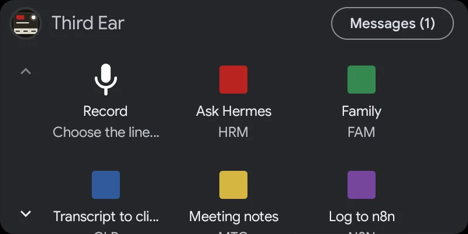
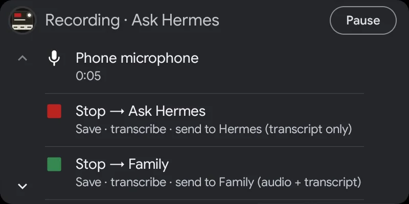

The voice recorder for the space age
The most modern voice recorder for Android, and a third ear for everything you would otherwise forget to write down. It records from your phone, a Bluetooth headset, LE Audio hearing aids or your car. The transcript is made on the phone, and the result (transcript or audio) goes wherever the button you tapped says: phone storage, the clipboard, a White Noise (Marmot) group or an HTTPS request.
And it is the best way to talk to your AI agents, hermes-agent included. Tap, speak, and the agent gets your words; its answer is read back into your ears.
- Free
- Open source (GPLv3)
- No account, no analytics
- Android 12+

A button for every destination, like a small mission control
Most recorders have one record button and a lot of hope. Third Ear has the buttons you define: a name and what happens afterwards.
- Save the recording only
- Copy the transcript to the clipboard
- Share the file or the text
- Send audio, transcript or both to a White Noise group
- Post to a webhook: n8n, Home Assistant, your own server
Tap one and recording starts. While you record, every button turns into "Stop → name" and says what it will do, so you can still pick a different destination at the moment you stop. Afterwards a notification shows each step (saving, transcribing, waiting for the transcription app, sending) and can speak it too, for example "Saved, transcribing."
Every line on the Board has its own cord colour, a short code and a lamp, so you read the state of everything at a glance:
- amber: transcribing or sending
- white: a reply is waiting from that line's group
- red: not delivered; the recording is saved and Retry is one tap away


The best way to talk to your agents
Typing to an agent on a phone is slow, and the voice modes of apps want you to look at the screen. Third Ear turns any agent into someone you talk to while walking, driving or cooking: one tap (or a Quick Settings tile, the widget, the car screen) records, the phone transcribes, and the words go to the agent.
- Through White Noise: put Third Ear and the agent in one encrypted group. hermes-agent joins White Noise groups through the MDK connector. The answer comes back and is read aloud or played, in your headset or hearing aids.
- Through HTTPS: post the transcript or the audio to the agent's webhook, to n8n or to your own server.
- Every agent, or every kind of request, gets its own button: “Ask Hermes”, “Add to my notes”, “Log to n8n”.
The agent's echo of your transcript is skipped by the 🎙️ ignore entry, so you hear only the answer.
Agents behind the MDK connector must allow Third Ear's npub (--allow-welcomer or --allow-user).
Bluetooth microphones that actually pick up
Android hands a Bluetooth microphone only to apps that behave like a phone call, so Third Ear behaves like one. It does the routing for you, and you can record from headsets, LE Audio hearing aids and the hands-free microphone in your car.
- It waits for LE Audio to start ("Waiting for the Bluetooth microphone…", typically 1.7 to 3.5 seconds).
- When the microphone really delivers sound, a spoken "go ahead" tells you to start talking.
- The source button on the recording screen shows which microphone is actually recording.
- If the Bluetooth microphone does not come up or disconnects, Third Ear falls back to the phone microphone once, with an audible cue.
- You can switch microphones in the middle of a recording. It continues in the same file.
Verified on a Pixel with LE Audio hearing aids.

Works best with Offline Speech to Text
Third Ear has no speech engine of its own. It hands the finished file to Offline Speech to Text (OSTT), a free app that transcribes on the device, offline. Think of OSTT as the brain behind the ears. This runs in the background, and a locked screen is fine.
- If OSTT is busy (say its keyboard is dictating), Third Ear waits and retries for about 10 minutes.
- Transcripts are saved as .txt files next to the recording, and you can copy them.
Get Offline Speech to Text on Zapstore
Meeting notes and dictation
Make a "Meeting notes" action: record, get the transcript. Or use "Transcript to clipboard" to dictate into any app: record, tap, paste. The transcripts are plain text files next to the audio, so you can search them.
Voice notes in White Noise, and answers back
White Noise is an end-to-end encrypted messenger built on nostr (Marmot/MLS). Third Ear has its own identity there, shown as an npub with a QR code. Invite it to a group, accept, and an action sends your voice note with the transcript as caption, or just the text.
Replies come back. For each group you choose: off, play voice messages, or play voice and read text aloud with text-to-speech. That happens automatically or on request with "Read aloud" in the notification. An ignore list (default 🎙️) skips messages you do not want read. The Messages tab lists your groups like a chat app, with Play, Read aloud and Mark all as read. You can back up your key by exporting and importing the nsec.


In the car, with Android Auto
- A grid of your actions on the car screen.
- Recording with the car's microphone, and a "Stop → action" screen.
- Incoming White Noise messages show up as car notifications with Reply and Mark as read. Android Auto reads them when you ask, never automatically.


Turn on Android Auto support
Third Ear isn't from the Play Store, so Android Auto hides it until you allow unknown sources. Clearance for launch takes about a minute:
- On the phone, open Android Auto's settings (search Settings for "Android Auto").
- Scroll to the bottom and tap Version about ten times, then allow development settings.
- Tap ⋮ in the top right → Developer settings → turn on Unknown sources.
- Back in Android Auto's settings, open Customize launcher and check Third Ear.
- In Third Ear's settings, turn on Use a Bluetooth microphone, so it records with the car's microphone.
- Connect to the car. If Third Ear doesn't show up, force-stop Android Auto and connect again.
Built for long recordings, even with the screen off
- Keeps recording with the screen off and the phone locked until you stop it.
- Crash-safe: if the app is killed, what was recorded is recovered and saved on the next launch. At most the last second is lost.
- A silence watchdog warns you when the microphone delivers digital silence, for example because the mic switch is off or another app holds it.
- Formats: AAC (.m4a), Opus (.ogg) and MP3.
Everywhere you are
Three Quick Settings tiles, each bound to one of your actions, a home-screen widget, and app shortcuts: long-press the icon, or bind any line to a button or an automation (Key Mapper, Tasker). The Third Ear screens are in English, Slovak, Czech, German and Spanish.
Free, open source, private
Third Ear is free software under the GPLv3. There is no account and no analytics. Transcription happens on your phone, not on some server in orbit.
It is a fork of Fossify Voice Recorder, made by Juraj Bednár.
For the geeks: recording from Bluetooth is surprisingly hard
On Android, a Bluetooth microphone is a phone-call microphone. An app that simply picks it as the input records from the phone's own microphone instead, without any error. Most voice recorders get this wrong.
Even done right, the headset's microphone takes 2.5 to 3 seconds to come up after recording starts, and some LE Audio hearing aids deliver nothing but digital silence unless something plays into them at the same time. Third Ear routes the call microphone, waits for the first real sound, tells you when to speak, and falls back to the phone microphone with an audible cue.
We wrote down everything we learned, with code, so other apps can get it right too: Recording from a Bluetooth microphone on Android. It also works as a skill for coding agents, and it covers transcription on the phone with Offline Speech to Text.
Get Third Ear
Ready for launch? Get Third Ear on Zapstore, or download the APK from the GitHub release. It needs Android 12 or newer.
Get it on Zapstore Download the APK Source on GitHub
Install Offline Speech to Text first, it does the transcribing.